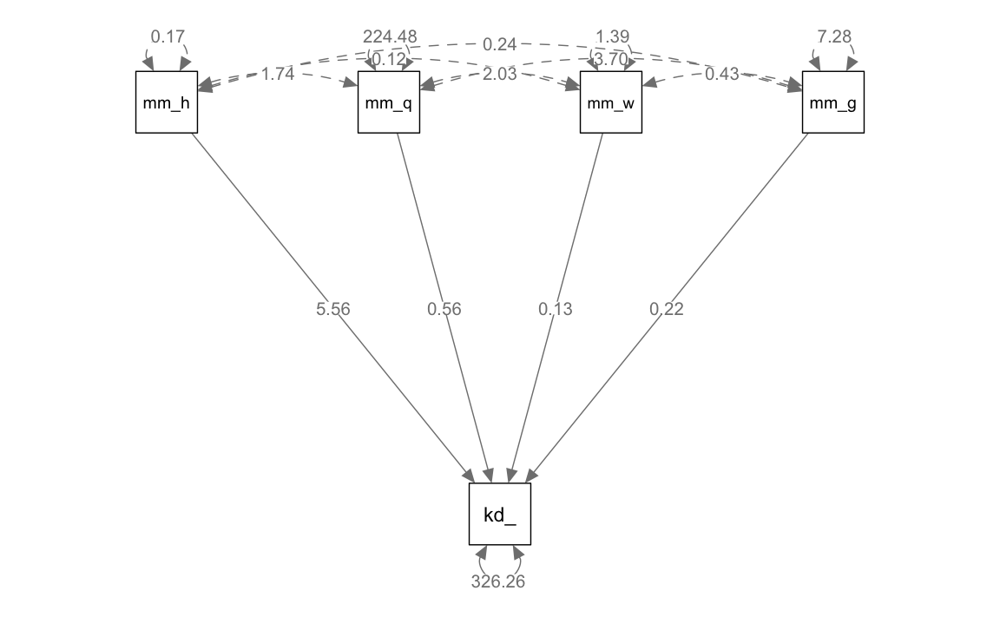

1.2 Regressione multipla
Nella regressione multipla vengono utilizzati \(k > 1\) predittori:
\[ y_i = \alpha + \sum_{j=1}^k \beta_j x_i + \varepsilon_i. \] L’interpretazione geometrica è simile a quella del modello bivariato. Nel caso di due predittori, il valore atteso della \(y\) può essere rappresentato da un piano; nel caso di \(k > 2\) predittori, da un iper-piano. Nel caso di \(k=2\), tale piano è posto in uno spazio di dimensioni \(x_1\), \(x_2\) (che possiamo immaginare definire un piano orizzontale) e \(y\) (ortogonale a tale piano). La superficie piana che rappresenta \(\mathbb{E}(y)\) è inclinata in maniera tale che l’angolo tra il piano e l’asse \(x_1\) corrisponde a \(\beta_1\) e l’angolo tra il piano e l’asse \(x_2\) corrisponde a \(\beta_2\).
1.2.1 Significato coefficienti parziali di regressione
Ai coefficienti parziali del modello di regressione multipla possiamo assegnare la seguente interpretazione:
Il coefficiente parziale di regressione \(\beta_j\) rappresenta l’incremento atteso della \(y\) se \(x_j\) viene incrementata di un’unità, tenendo costante il valore delle altre variabili indipendenti.
Un modo per interpretare la locuzione “al netto dell’effetto delle altre variabili indipendenti” è quello di esaminare la relazione tra la \(y\) parzializzata e la \(x_j\) parzializzata. In questo contesto, parzializzare significa decomporre una variabile di due componenti: una componente che è linearmente predicibile da una o più altre variabili e una componente che è linearmente incorrelata con tali varibili “terze”.
Eseguiamo questa “depurazione” dell’effetto delle variabili “terze” sia sulla \(y\) sia su \(x_j\). A questo punto possiamo esaminare la relazione bivariata che intercorre tra la componente della \(y\) linearmente indipendente dalle variabili “terze” e la componente della \(x_j\) linearmente indipendente dalle variabili “terze”. Il coefficiente di regressione bivariato così ottenuto è identico al coefficiente parziale di regressione nel modello di regressione multipla. Possiamo così ottenere un’interpretazione di \(\beta_j\).
Esaminiamo un caso concreto.
d <- rio::import(
here::here("data", "kidiq.dta")
)
glimpse(d)
#> Rows: 434
#> Columns: 5
#> $ kid_score <dbl> 65, 98, 85, 83, 115, 98, 69, 106, 102, 95, 91, 58, 84, 78, 1…
#> $ mom_hs <dbl> 1, 1, 1, 1, 1, 0, 1, 1, 1, 1, 1, 1, 1, 1, 0, 1, 1, 1, 1, 0, …
#> $ mom_iq <dbl> 121.11753, 89.36188, 115.44316, 99.44964, 92.74571, 107.9018…
#> $ mom_work <dbl> 4, 4, 4, 3, 4, 1, 4, 3, 1, 1, 1, 4, 4, 4, 2, 1, 3, 3, 4, 3, …
#> $ mom_age <dbl> 27, 25, 27, 25, 27, 18, 20, 23, 24, 19, 23, 24, 27, 26, 24, …fm <- lm(kid_score ~ mom_iq + mom_work + mom_age + mom_hs, data = d)
fm$coef
#> (Intercept) mom_iq mom_work mom_age mom_hs
#> 20.8226117 0.5620814 0.1337287 0.2198599 5.5611781Eseguiamo la parzializzazione di \(y\) in funzione delle variabili mom_work, mom_age e mom_hs:
fm_y <- lm(kid_score ~ mom_work + mom_age + mom_hs, data = d)Lo stesso per mom_iq:
fm_x <- lm(mom_iq ~ mom_work + mom_age + mom_hs, data = d)Esaminiamo ora la regressione bivariata tra le componenti parzializzate della \(y\) e di \(x_j\):
mod <- lm(fm_y$residuals ~ fm_x$residuals)
mod$coef
#> (Intercept) fm_x$residuals
#> -1.651851e-15 5.620814e-01Si vede come il coefficiente di regressione bivariato risulta identico al corrispondente coefficiente parziale di regressione.
1.2.2 Relazioni causali
Un altro modo per interpretare i coefficienti parziali di regressione è nell’ambito dei quelli che vengono chiamati i path diagrams. I diagrammi di percorso, che tratteremo in seguito e qui solo anticipiamo, descrivono le relazioni “causali” tra variabili: le variabili a monte del diagramma di percorso indicono le “cause” esogene e le variabili a valle indicano gli effetti, ovvero le variabili endogene. I coefficienti di percorso rappresentati graficamente come frecce orientate corrispondono all’effetto diretto sulla variabile verso cui punta la freccia della variabile a monte della freccia. Tali coefficienti di percorso non sono altro che i coefficienti parziali di regressione del modello di regressione multipla. In questo contesto, indicano l’effetto atteso diretto sulla variabile endogena dell’incremento di un’unità della variabile esogena, lasciano immutate tutte le altre relazioni strutturali del modello.
Usiamo la funzione sem() del pacchetto lavaan per definire il modello rappresentato nel successivo diagramma di percorso:
model <- "
kid_score ~ mom_hs + mom_iq + mom_work + mom_age
"Adattiamo il modello ai dati
fit <- sem(model, data = d)Il diagramma di percorso si ottiene con le seguenti istruzioni:
semPaths(
fit, "est",
posCol = c("black"),
edge.label.cex = 0.9,
sizeMan = 7,
what = "path"
)
Come indicato nel diagramma, l’effetto diretto di mom_iq su kid_score è identico al corrispondente coefficiente parziale di regressione.
1.2.3 Errore di specificazione
Spiritosamente chiamato “heartbreak of L.O.V.E.” (Left-Out Variable Error; Mauro (1990)), l’errore di specificazione è una caratteristica fondamentale dei modelli di regressione che deve sempre essere tenuta a mente quando interpretiamo i risultati di questa analisi statistica. L’errore di specificazione si verifica quando escludiamo dal modello di regressione una variabile che
- è associata con altre variabili nel modello,
- ha un effetto diretto sulla \(y\).
Come conseguenza dell’errore di specificazione, la direzione e il segno dei coefficienti parziali di regressione risultano sistematicamente distorti.
Consideriamo un esempio con dati simulati nei quali immaginiamo che la prestazione sia positivamente associata alla motivazione e negativamente associata all’ansia. Immaginiamo inoltre che vi sia una correlazione positiva tra ansia a motivazione. Ci chiediamo cosa succede al coefficiente parziale della variabile “motivazione” se la variabile “ansia” viene esclusa dal modello di regressione.
set.seed(123)
n <- 400
anxiety <- rnorm(n, 10, 1.5)
motivation <- 4.0 * anxiety + rnorm(n, 0, 3.5)
cor(anxiety, motivation)
#> [1] 0.8617706performance <- 0.5 * motivation - 5.0 * anxiety + rnorm(n, 0, 3)sim_dat2 <- tibble(performance, motivation, anxiety)
fm1 <- lm(performance ~ motivation + anxiety, sim_dat2)
coef(fm1)
#> (Intercept) motivation anxiety
#> 1.3711965 0.4953886 -5.1052176fm2 <- lm(performance ~ motivation, sim_dat2)
summary(fm2)
#>
#> Call:
#> lm(formula = performance ~ motivation, data = sim_dat2)
#>
#> Residuals:
#> Min 1Q Median 3Q Max
#> -13.501 -3.409 0.005 3.311 12.616
#>
#> Coefficients:
#> Estimate Std. Error t value Pr(>|t|)
#> (Intercept) -12.39720 1.44591 -8.574 2.24e-16 ***
#> motivation -0.43717 0.03553 -12.305 < 2e-16 ***
#> ---
#> Signif. codes: 0 '***' 0.001 '**' 0.01 '*' 0.05 '.' 0.1 ' ' 1
#>
#> Residual standard error: 4.866 on 398 degrees of freedom
#> Multiple R-squared: 0.2756, Adjusted R-squared: 0.2738
#> F-statistic: 151.4 on 1 and 398 DF, p-value: < 2.2e-16Il risultato prodotto dal modello di regressione è sbagliato: come conseguenza dell’errore di specificazione, il segno del coefficiente parziale di regressione della variabile “motivazione” è negativo, anche se nel vero modello di regressione tale coefficiente ha il segno opposto. Quindi, se noi interpretassimo il coefficiente parziale ottenuto in termini casuali, saremmo portati a concludere che la motivazione fa diminuire la prestazione anche se, in realtà (nel modello generatore dei dati), è vero l’opposto.
È facile vedere perché questo si verifica. Supponiamo che il vero modello sia
\[ y = \alpha + \beta_1 X_1 + \beta_2 X_2 + \varepsilon \] che verrebbe stimato con
\[ y = a + b_1 X_1 + b_2 X_2 + e. \] Supponiamo che il ricercatore creda invece che
\[ y = \alpha^\prime + \beta_1^\prime X_1 + \varepsilon^\prime \]
e quindi stimi
\[ y = a^\prime + b_1^\prime X_1 + e^\prime \]
omettendo \(X_2\) dal modello.
Ci chiediamo che relazione ci sia tra \(b_1^\prime\) e \(b_1\).
La formula per \(b_1^\prime\) è
\[ \begin{align} b_1^\prime &= \frac{\mbox{Cov}(X_1, Y)}{\mbox{Var}(X_1)}\notag\\ &= \frac{\mbox{Cov}(X_1, a + b_1 X_1 + b_2 X_2 + e)}{\mbox{Var}(X_1)}\notag\\ &= \frac{\mbox{Cov}(X_1, a)+b_1 \mbox{Cov}(X_1, X_1) + b_2 \mbox{Cov}(X_1, X_2) + \mbox{Cov}(X_1, e)}{\mbox{Var}(X_1)}\notag\\ &= \frac{0 + b_1 \mbox{Var}(X_1) + b_2 \mbox{Cov}(X_1, X_2) + 0}{\mbox{Var}(X_1)}\notag\\ &= b_1 + b_2 \frac{\mbox{Cov}(X_1, X_2)}{\mbox{Var}(X_1)}. \end{align} \]
Quindi, se \(X_2\) viene erroneamente omesso dal modello,
\[
\mathbb{E}(b_1^\prime) = \beta_1 + \beta_2 \frac{\sigma_{12}}{\sigma_1^2}.
\]
Verifichiamo per i dati dell’esempio che stiamo discutendo. Nel caso presente, \(X_1\) è motivation e \(X_2\) + anxiety. Dunque, applicando la formula precedente, otteniamo lo stesso valore per il coefficiente di regressione associato a motivation che era stato ottenuto adattando ai dati il modello performance ~ motivation, ovvero:
fm1$coef[2] + fm1$coef[3] * cov(sim_dat2$motivation, sim_dat2$anxiety) / var(sim_dat2$motivation)
#> motivation
#> -0.43716751.2.4 Soppressione
Le conseguenze dell’errore di specificazione sono chiamate “soppressione” (suppression). In generale, si ha soppressione quando (1) il valore assoluto del peso beta di un predittore è maggiore di quello della sua correlazione bivariata con il criterio o (2) i due hanno segni opposti.
- L’esempio descritto sopra è un caso di soppressione negativa, dove il predittore ha correlazioni bivariate positive con il criterio, ma si riceve un peso beta negativo nell’analisi di regressione multipla.
- Un secondo tipo di soppressione è la soppressione classica, in cui un predittore non è correlato al criterio ma riceve un peso beta diverso da zero se un altro predittore viene controllato.
- C’è anche la soppressione reciproca che può verificarsi quando due variabili sono correlate positivamente con il criterio ma negativamente tra loro.
1.2.5 Stepwise regression
Un’implicazione della soppressione è che i predittori non dovrebbero essere selezionati in base ai valori delle correlazioni bivariate con il criterio. Queste associazioni di ordine zero non controllano gli effetti degli altri predittori, quindi i loro valori possono essere fuorvianti rispetto ai coefficienti di regressione parziale per le stesse variabili. Per lo stesso motivo, il fatto che le correlazioni bivariate con il criterio siano statisticamente significative o meno è irrilevante per quanto riguarda la selezione dei predittori. Sebbene le procedure informatiche di regressione rendano facile tali processi di selezione dei predittori, i ricercatori dovrebbero evitare di usare tali metodi. Il rischio è che anche piccole, ma non rilevate, non-linearità o effetti indiretti tra i predittori possano seriamente distocere i coefficienti di regressione parziale. È meglio selezionare giudiziosamente il minor numero di predittori sulla base di ragioni teoriche o dei risultati di ricerche precedenti.
Una volta selezionati, ci sono due modi di base per inserire i predittori nell’equazione di regressione: uno consiste nell’inserire tutti i predittori contemporaneamente. L’altro è inserirli nel corso di una serie di passaggi, ovvero mediante usando una procedura sequenziale. L’ordine di ingresso può essere determinato in base a uno di due diversi standard: teorici (razionali) o empirici (statistici). Lo standard razionale corrisponde alla regressione gerarchica, in cui si comunica al computer un ordine fisso per inserire i predittori. Ad esempio, a volte le variabili demografiche vengono inserite nel primo passaggio, quindi nel secondo passaggio viene inserita una variabile psicologica di interesse. Questo ordine non solo controlla le variabili demografiche ma permette anche di valutare il potere predittivo della variabile psicologica, al di là di quello delle semplici variabili demografiche. Quest’ultimo può essere stimato come l’aumento della correlazione multipla al quadrato, o \(\Delta R^2\), da quella della fase 1 con solo predittori demografici a quella della fase 2 con tutti i predittori nell’equazione di regressione.
Un esempio di standard statistico è la regressione stepwise, in cui il computer seleziona l’inserimento dei predittori in base esclusivamente alla significatività statistica; cioè, viene chiesto: quale predittore, se inserito nell’equazione, avrebbe il valore_\(p\) più piccolo per il test del suo coefficiente di regressione parziale? Dopo la selezione, i predittori in una fase successiva possono essere rimossi dall’equazione di regressione in base ai loro valori-\(p\) (ad esempio, se \(p \geq\) .05). Il processo stepwise si interrompe quando, aggiungendo più predittori, \(\Delta R^2\) non migliora. Varianti della regressione stepwise includono forward inclusion, in cui i predittori selezionati non vengono successivamente rimossi dal modello, e backward elimination, che inizia con tutti i predittori nel modello per poi rimuoverne alcuni in passi successivi. I problemi relativi ai metodi stepwise sono così gravi da essere effettivamente banditi in alcuni giornali. Un problema è che fanno leva su risultati che si ottengono per caso, in dipendenza delle idiosincrasie del campione (quindi, non replicabili).
In secondo luogo, una volta che un insieme finale di predittori selezionati razionalmente è stato inserito nell’equazione di regressione, tali predittori non dovrebbero essere successivamente rimossi se i loro coefficienti di regressione non sono statisticamente significativi: il ricercatore non dovrebbe sentirsi in dovere di lasciar perdere ogni predittore che non risulta statisticamente significativo. In campioni piccoli, la potenza dei test di significatività è bassa e la rimozione di un predittore non significativo può alterare sostanzialmente la soluzione. Se c’è una buona ragione per includere un predittore, allora è meglio lasciarlo nel modello, fino a prova contraria.